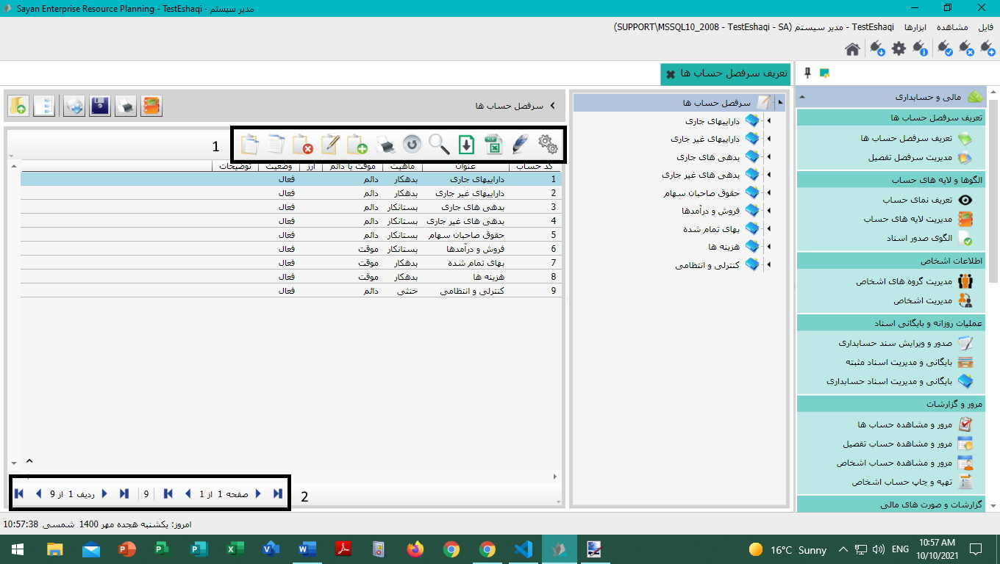
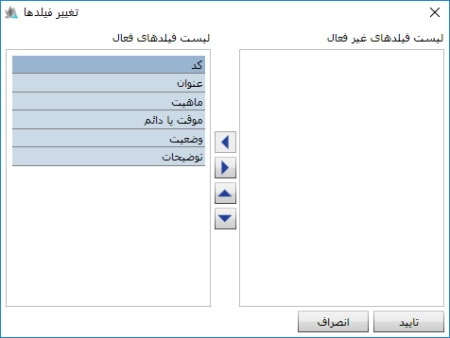
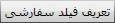
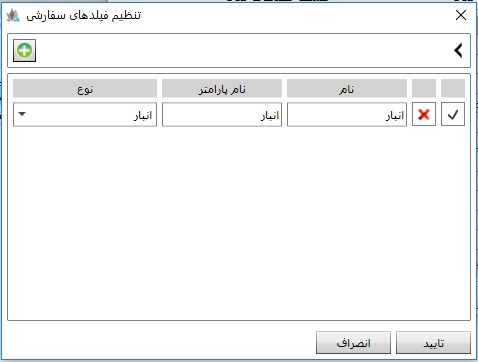
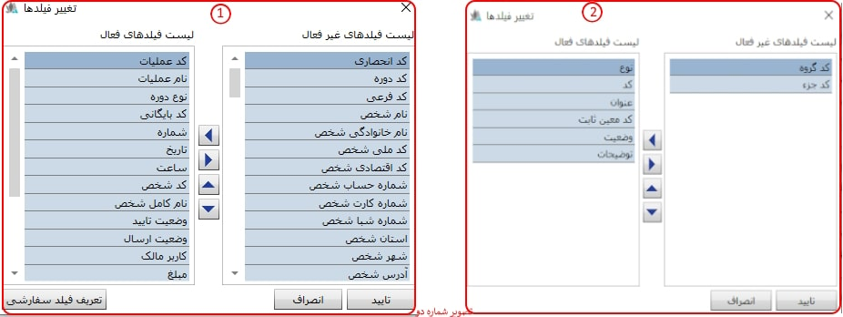
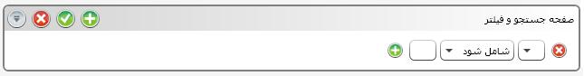

و
و
 مشاهده فیلد های فعال و غیر فعال از ابزارهای مذکور استفاده نمایید. با این کار نمایش
فیلدهای موجود در جدول شما تغییر می کند.
مشاهده فیلد های فعال و غیر فعال از ابزارهای مذکور استفاده نمایید. با این کار نمایش
فیلدهای موجود در جدول شما تغییر می کند.
همانطور که پیشتر توضیح داده شده، لیست فرم ها در سمت راست "صفحه اصلی" نرم افزار قرار دارد. با انتخاب هر یک از فرم ها امکان مشاهده آنها در "صفحه اصلی" فراهم گردیده است.در تصویر زیر، نمایش تعریف سرفصل حسابها از نرم افزار مالی و حسابداری انتخاب شده است.
دو کادر در شکل بالا مشخص شده است که به توضیح هر یک می پردازیم:
کادر شماره 1:
در تمامی جدول های موجود در صفحات نرم افزار، نوار ابزار تصویر بالا قرار داده شده است که کاربرد هر یک از آنها را به ترتیب ارائه خواهیم کرد:
تغییر فیلدها (Ctrl + H ) : برای هر یک از جداول موجود در نرم افزار، تعدادی فیلد اطلاعاتی تعریف شده است، به کمک این پنجره شما می توانید فیلدهای دلخواه و موردنظرتان را مشاهده نمایید.

همانگونه که در صفحه ی بالا مشاهده می کنید، امکان انتخاب
و
مشاهده فیلد های فعال و غیر فعال از ابزارهای مذکور استفاده نمایید. با این کار نمایش
فیلدهای موجود در جدول شما تغییر می کند.
با استفاده از دو کلید نیز می توانید ترتیب نمایش فیلد های فعال را تغییر دهید.
با استفاده از کلید فوق می توانید فیلد مورد نظر خود را در جدول ایجاد نمایید، نمایش فیلد سفارشی مشروط بر آنست که این فیلد در گزارشات پیشین شما محاسبه و "وجود" داشته باشد. برای این منظور این گزینه را کلیک کنید و پنجره تنظیم فیلدهای سفارشی را مشاهده خواهید کرد.
پس از افزودن فیلدهای مورد نظرتان در جدول فوق بر روی تایید کلیک کنید تا همانند تصویر زیر فیلد جدید شما در جدول نمایش داده شود.

 گروه بندی (Ctrl + G ):
این امکان در جداول فراهم گردیده است که ردیف های اطلاعاتی هر
یک از جداول را بر اساس فیلدهای مربوط به آنها
گروه بندی کنید. در صورتی که ابزار
گروه بندی را کلیک کنید پنجره زیر نمایان خواهد شد.
گروه بندی (Ctrl + G ):
این امکان در جداول فراهم گردیده است که ردیف های اطلاعاتی هر
یک از جداول را بر اساس فیلدهای مربوط به آنها
گروه بندی کنید. در صورتی که ابزار
گروه بندی را کلیک کنید پنجره زیر نمایان خواهد شد.

در سمت راست پنجره لیست فیلدهای جدول و در سمت چپ الگوی گروه بندی را مشاهده می کنید. لازم به توضیح است که در تصویر بالا یک الگوی گروه بندی بر اساس موقت یا دائم بودن سرفصل حساب ایجاد شده است، بر اساس این الگو سرفصل حساب ها به دو گروه کلی تقسیم می شود، سرفصل حساب های موقت و سرفصل حساب های دائم. علاوه بر آن با فلشهای موجود در نوار وسط می توانید به الگوهای محاسباتی فیلدهای مورد نظر را اضافه و یا کم کنید. همچنین به کمک سایر کلیدها میتوانید ترتیب نمایش گروه بندی را تنظیم کنید.
صدور به اکسل : امکان ارسال اطلاعات به نرم افزار اکسل از طریق این ابزار برای شما مهیا گردیده است. لازم به توضیح است که این ابزار در تمامی جداول طراحی شده در نرم افزار این ابزار پیاده سازی شده است.
برای این منظور تنها کافیست که ابزار "صدور به اکسل" را کلیک و پس از آن محل ذخیره فایل اکسل را در پنجره پیش رویتان مشخص نمایید. اکنون می توانید فایل موردنظرتان را در مسیر از پیش تعیین شده مشاهده نمایید.
علاوه بر آن در صورتی که تنها ردیف های خاصی از لیست موجود برای ارسال به اکسل موردنیاز است، همزمان با انتخاب ردیف های دلخواه و فشردن کلید Ctrl، و کلیک "صدور به اکسل"عملیات انتقال به اکسل را انجام دهید.
 ورود از فایل :
توضیحات مربوط به این گزینه
را می توانید در لینک زیر مشاهده کنید.
ورود از فایل :
توضیحات مربوط به این گزینه
را می توانید در لینک زیر مشاهده کنید.
ورود از فایل
جستجو و فیلتر( F3 ) : با کلیک بر روی این آیکن پنجره زیر باز می شود و شما را قادر به جستجو در میان صفحات می نماید:

در هر صفحه فعال اگر روی آیکن جستجو کلیک کنید امکان جستجو
در فیلد های همان صفحه را به شما می دهد. با
انتخاب باکس اول از سمت راست می توانید از لیست
باز شده، مبنای جستجوی خود را مشخص کنید. در
باکس دوم شرط جستجو و در باکس آخر نتیجه جستجو
را تعیین نمایید. برای تایید شرط جستجو کلید Enter یا آیکن
 را از سمت چپ کادر
انتخاب کنید و نتیجه جستجو را مشاهده نمایید.
را از سمت چپ کادر
انتخاب کنید و نتیجه جستجو را مشاهده نمایید.
همچنین با کلیک روی
 (Ctrl + Plus) می توانید فیلتر
دیگری اضافه کنید و جستجو را
با دو یا چندین شرط انجام دهید.
(Ctrl + Plus) می توانید فیلتر
دیگری اضافه کنید و جستجو را
با دو یا چندین شرط انجام دهید.
آیکن
 یا کلید Escape فیلتر ایجادی شما را
غیر فعال می کند و آیکن
یا کلیدهای Ctrl + E صفحه فیلتر شما را
کوچک و بزرگ می کند.
یا کلید Escape فیلتر ایجادی شما را
غیر فعال می کند و آیکن
یا کلیدهای Ctrl + E صفحه فیلتر شما را
کوچک و بزرگ می کند.
 باز خوانی ( F5 ) :
اگر تغییری را در
صفحه ای ایجاد کردید ولی تغییر ایجاد شده
را مشاهده نکردید می توانید با کلیک روی
این آیکن تغییر اعمال شده را مشاهده کنید.
باز خوانی ( F5 ) :
اگر تغییری را در
صفحه ای ایجاد کردید ولی تغییر ایجاد شده
را مشاهده نکردید می توانید با کلیک روی
این آیکن تغییر اعمال شده را مشاهده کنید.
اضافه ( F8 ) : برای ایجاد یک آیتم جدید (بسته به صفحه ای که در آن هستید) می توانید از این آیکن استفاده نمایید، با کلیک بر روی این آیکن فرم ایجاد مربوطه ظاهر می شود.
 ویرایش( F2 ) :
برای ویرایش محتویات هر
صفحه ای می توانید از این آیکن استفاده کنید.
ویرایش( F2 ) :
برای ویرایش محتویات هر
صفحه ای می توانید از این آیکن استفاده کنید.
حذف ( F9 ) : برای حذف یک آیتم (بسته به صفحه ای که در آن هستیم) از این آیکن استفاده کنید.
کپی (Ctrl + C ) : چنانچه مایل بودید آیتمی را در همان جدول یا در جداول دیگر کپی کنید می توانید آیتم مورد نظر را انتخاب کرده و روی آیکن کپی کلیک کنید. با این کار مورد انتخاب شده در حافظه موقت سیستم ذخیره می شود.
 چسباندن ( Ctrl + V ) :
بعد از کپی کردن چنانچه
این آیکن را در صفحه مقصد کلیک کنید
یک کپی از مورد ذخیره شده ایجاد می شود.
چسباندن ( Ctrl + V ) :
بعد از کپی کردن چنانچه
این آیکن را در صفحه مقصد کلیک کنید
یک کپی از مورد ذخیره شده ایجاد می شود.
 نکته: دقت داشته باشید که در نرم افزار سایان
قابلیت کپی کردن و چسباندن به صورت گروهی و
همچنین بین دیتابیس های مختلف وجود دارد.
نکته: دقت داشته باشید که در نرم افزار سایان
قابلیت کپی کردن و چسباندن به صورت گروهی و
همچنین بین دیتابیس های مختلف وجود دارد.
 چاپ ( Ctrl + P):
به کمک این آیتم می توانید
گزارشات خود را بر روی کاغذ چاپ کنید.
چاپ ( Ctrl + P):
به کمک این آیتم می توانید
گزارشات خود را بر روی کاغذ چاپ کنید.
 ذخیره در فایل ( Ctrl + S ):
با این آیتم می توانید اطلاعاتی
از قبیل سر حساب ها، الگوهای صدور سند و ...
را در فایلی از رایانه خود ذخیره کنید.
ذخیره در فایل ( Ctrl + S ):
با این آیتم می توانید اطلاعاتی
از قبیل سر حساب ها، الگوهای صدور سند و ...
را در فایلی از رایانه خود ذخیره کنید.
 خواندن از فایل(Ctrl + O):
در برخی موارد برای
سادگی کار می توانید به کمک این آیتم اطلاعاتی
از قبیل سرفصل حساب ها، الگوهای صدور سند و ...
را از فایلی در رایانه خود بارگذاری کنید.
برای مثال به جای تعریف سرفصل های حساب در
حسابداری می توانید سرفصل استانداردی را که
در سیستم سایان قرار دارد بارگذاری کنید.
خواندن از فایل(Ctrl + O):
در برخی موارد برای
سادگی کار می توانید به کمک این آیتم اطلاعاتی
از قبیل سرفصل حساب ها، الگوهای صدور سند و ...
را از فایلی در رایانه خود بارگذاری کنید.
برای مثال به جای تعریف سرفصل های حساب در
حسابداری می توانید سرفصل استانداردی را که
در سیستم سایان قرار دارد بارگذاری کنید.
 برگشت به قبلی( Bake ) :
این آیکن برگشت به سطح بالاتر را میسر می کند مثلا اگر یک
پارامتر را در سمت چپ داشته باشید با زدن این
آیکن به عملیات مربوط به پارامتر بر می گردید.
برگشت به قبلی( Bake ) :
این آیکن برگشت به سطح بالاتر را میسر می کند مثلا اگر یک
پارامتر را در سمت چپ داشته باشید با زدن این
آیکن به عملیات مربوط به پارامتر بر می گردید.
 نمایش درخت (Ctrl + T)
با این آیکن شما می توانید
در ستون سمت راست صفحه نمایش درختی عملیات ها
را داشته باشید یا نمایش درختی را مخفی کنید.
نمایش درخت (Ctrl + T)
با این آیکن شما می توانید
در ستون سمت راست صفحه نمایش درختی عملیات ها
را داشته باشید یا نمایش درختی را مخفی کنید.

با آیکن های موجود در این قسمت شما می توانید بین ردیف های جدول و بین صفحات مختلف جدول جا به جایی انجام دهید.